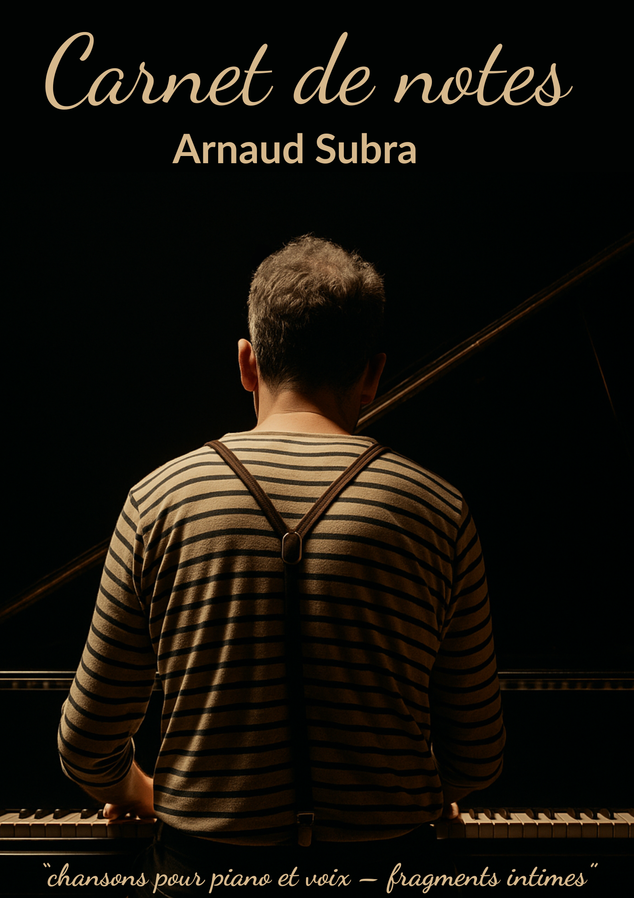

La mémoire
Carnet de notes
Un récital piano-voix où le texte, le souffle et le silence tiennent ensemble dans leur nudité.

Le spectacle
Seul en scène, Arnaud Subra livre un récital piano-voix qui va du murmure au chant déployé. La voix explore ses amplitudes — fragile, tendue, projetée — soutenue par un piano habité.
Carnet de notes trace une ligne mouvante entre confidence et intensité. Chaque morceau explore les fragments d’une intimité, convoque le souvenir ou l’absence et cherche un lien direct avec le public.
Écouter · voir · accueillir
Écoute
Les extraits audio seront intégrés ici.
Vidéo
La vidéo de présentation sera intégrée ici.
Diffusion
Une forme pensée pour les lieux de proximité et les conditions d’écoute attentive.